Executive Summary
In response to challenges exposed by the COVID-19 pandemic, our project focused on optimizing hospital resource management by predicting patient length of stay. Using advanced data analysis, machine learning, and deep learning techniques, we have identified key factors affecting stay duration and developed models to enhance patient care and resource allocation.
Project Goals
- Enhance Patient Care: Understand social, financial, and demographic factors impacting recovery times.
- Optimize Hospital Resources: Identify operational bottlenecks and resource allocation inefficiencies.
- Develop Targeted Interventions: Create data-driven strategies to address factors contributing to prolonged stays.
Key Findings
1. Patient Demographics and Hospital Characteristics


- Middle-aged patients (31-60 years) form the largest group requiring hospital care.
- Very young (0-10) and very old (91-100) patients are least common.
- Significant variations in patient volumes across hospital types and regions:
- Hospital codes 8 and 28 handle notably higher volumes.
- Type 'e' hospitals are most prevalent, followed by type 'b'.
- Region X has the highest number of cases, followed by Y and Z.
2. Length of Stay Patterns

 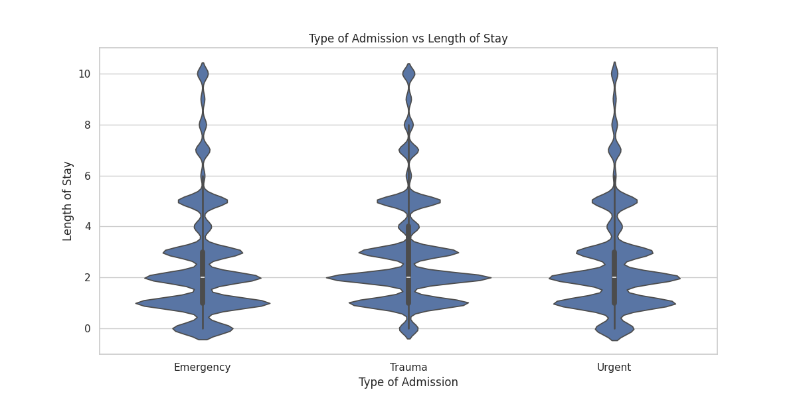
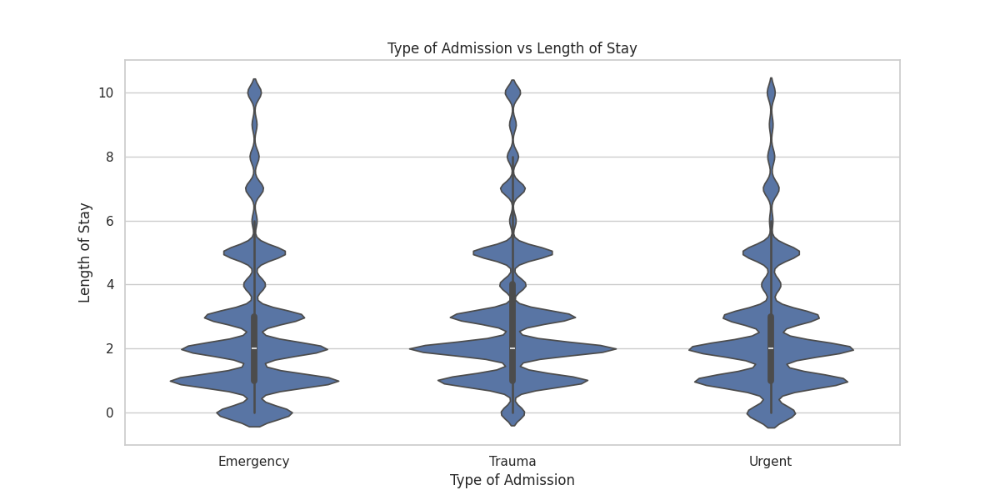
 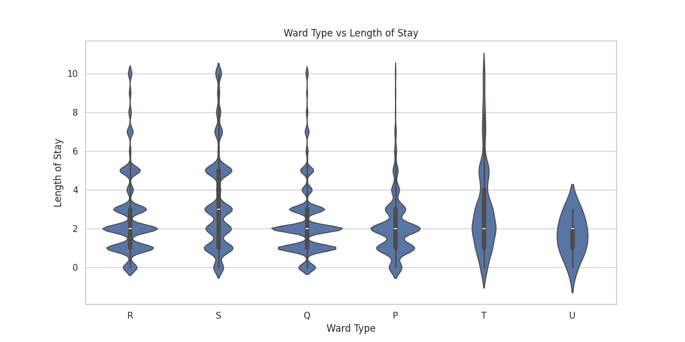
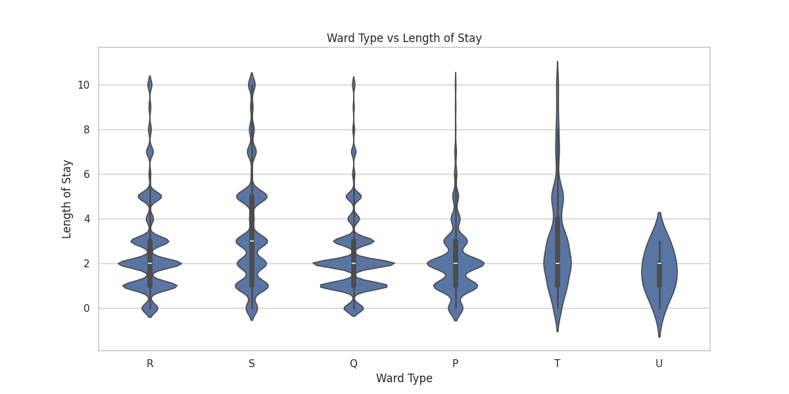
- Multiple peaks in stay duration, with highest frequencies around 10, 20, and 30 days.
- Factors associated with longer stays:
- Trauma admissions
- Extreme severity of illness
- Departments: Surgery, Radiotherapy
- Ward types: T and U
3. Readmission Insights
 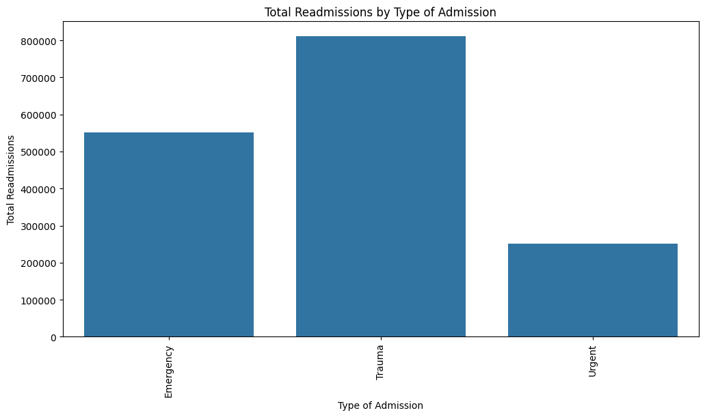
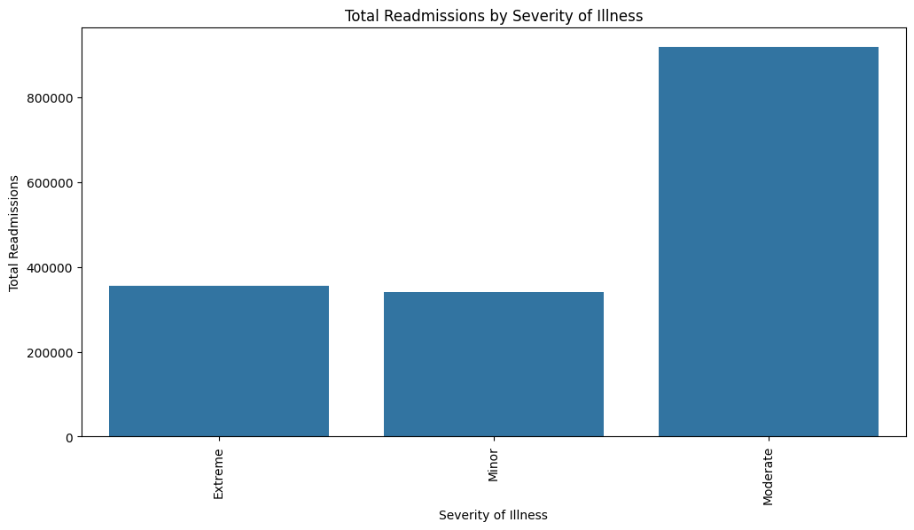
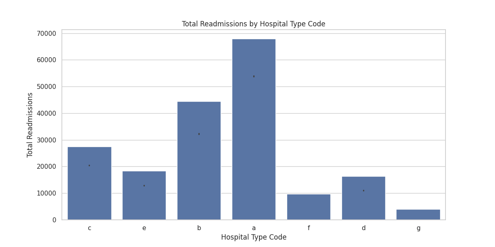
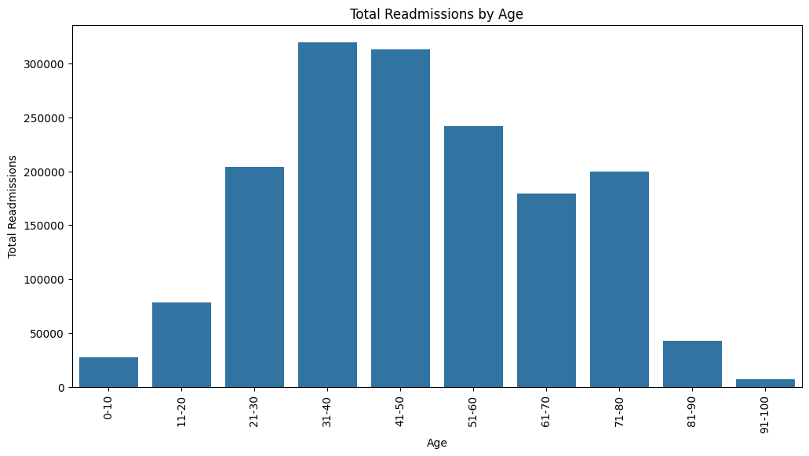
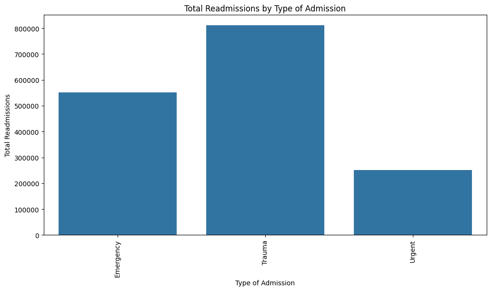
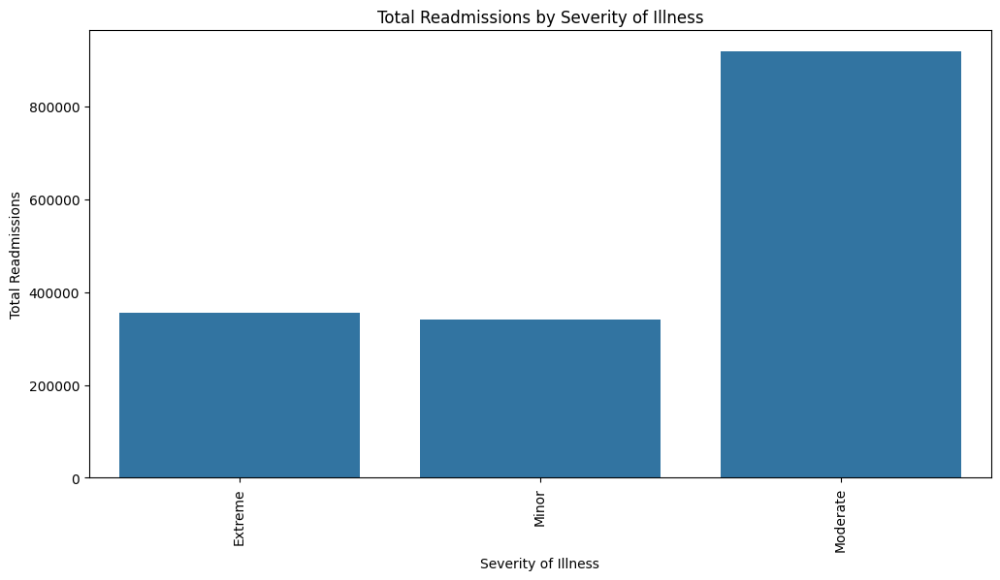
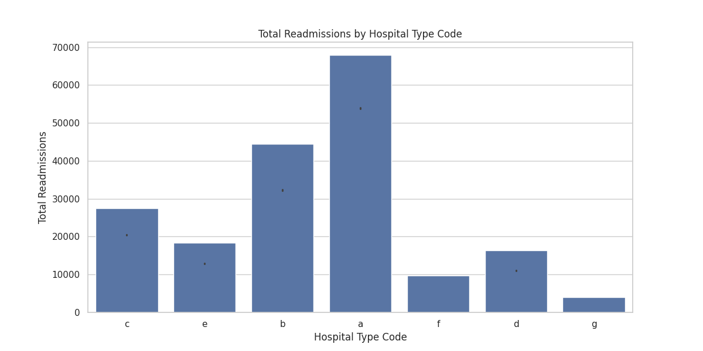
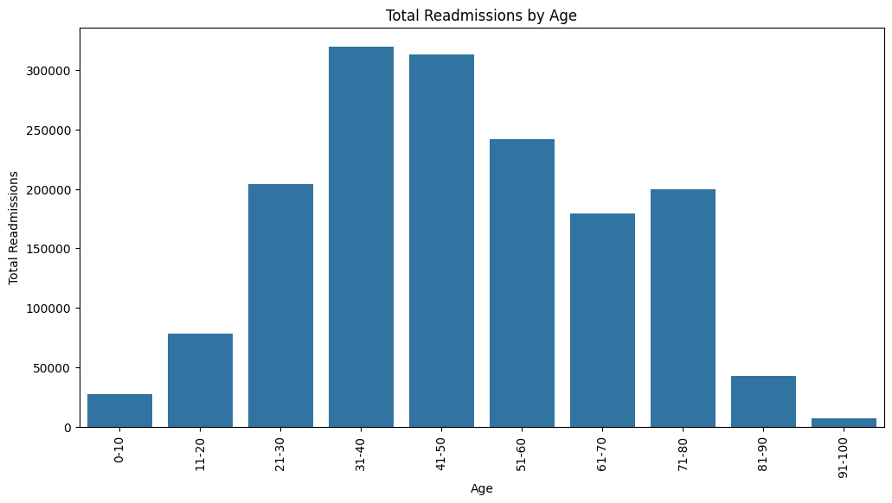
- Higher readmission rates observed in:
- Trauma cases
- Moderate to extreme illness severity
- Gynecology department
- Hospital type 'a'
- Patients with more than 10 readmissions tend to have significantly longer average stays.
- Age groups 31-40 and 41-50 have the highest number of readmissions.
| Readmission Count | Count | Mean Stay (days) | Std Dev | Min Stay | 25% Quartile | Median Stay | 75% Quartile | Max Stay |
|---|---|---|---|---|---|---|---|---|
| 0 | 92017.0 | 33.10 | 21.59 | 5.0 | 15.0 | 25.0 | 35.0 | 110.0 |
| 1 | 71668.0 | 31.94 | 21.88 | 5.0 | 15.0 | 25.0 | 35.0 | 110.0 |
| 5 | 15875.0 | 30.76 | 21.51 | 5.0 | 15.0 | 25.0 | 35.0 | 110.0 |
| 10 | 1030.0 | 31.57 | 25.14 | 5.0 | 15.0 | 25.0 | 35.0 | 110.0 |
| 15 | 116.0 | 44.40 | 36.61 | 5.0 | 15.0 | 25.0 | 65.0 | 110.0 |
| 20 | 34.0 | 47.35 | 35.87 | 5.0 | 25.0 | 35.0 | 70.0 | 110.0 |
| 25 | 16.0 | 50.31 | 38.23 | 5.0 | 20.0 | 50.0 | 75.0 | 110.0 |
| 30 | 7.0 | 44.29 | 38.56 | 5.0 | 20.0 | 35.0 | 60.0 | 110.0 |
| 38 | 3.0 | 61.67 | 20.82 | 45.0 | 50.0 | 55.0 | 70.0 | 85.0 |
| 39 | 2.0 | 72.50 | 53.03 | 35.0 | 53.8 | 72.5 | 91.3 | 110.0 |
| 40 | 2.0 | 62.50 | 67.18 | 15.0 | 38.8 | 62.5 | 86.3 | 110.0 |
| 41 | 2.0 | 92.50 | 24.75 | 75.0 | 83.8 | 92.5 | 101.3 | 110.0 |
| 42 | 2.0 | 72.50 | 53.03 | 35.0 | 53.8 | 72.5 | 91.3 | 110.0 |
This table shows a clear trend: as the number of readmissions increases, especially beyond 10, the average length of stay tends to increase significantly. For instance, patients with 15 readmissions have an average stay of 44.40 days, compared to 31.57 days for those with 10 readmissions. It continues to increase to 72.50 days on average patient with 42 readmission
4. Facility Quality Analysis
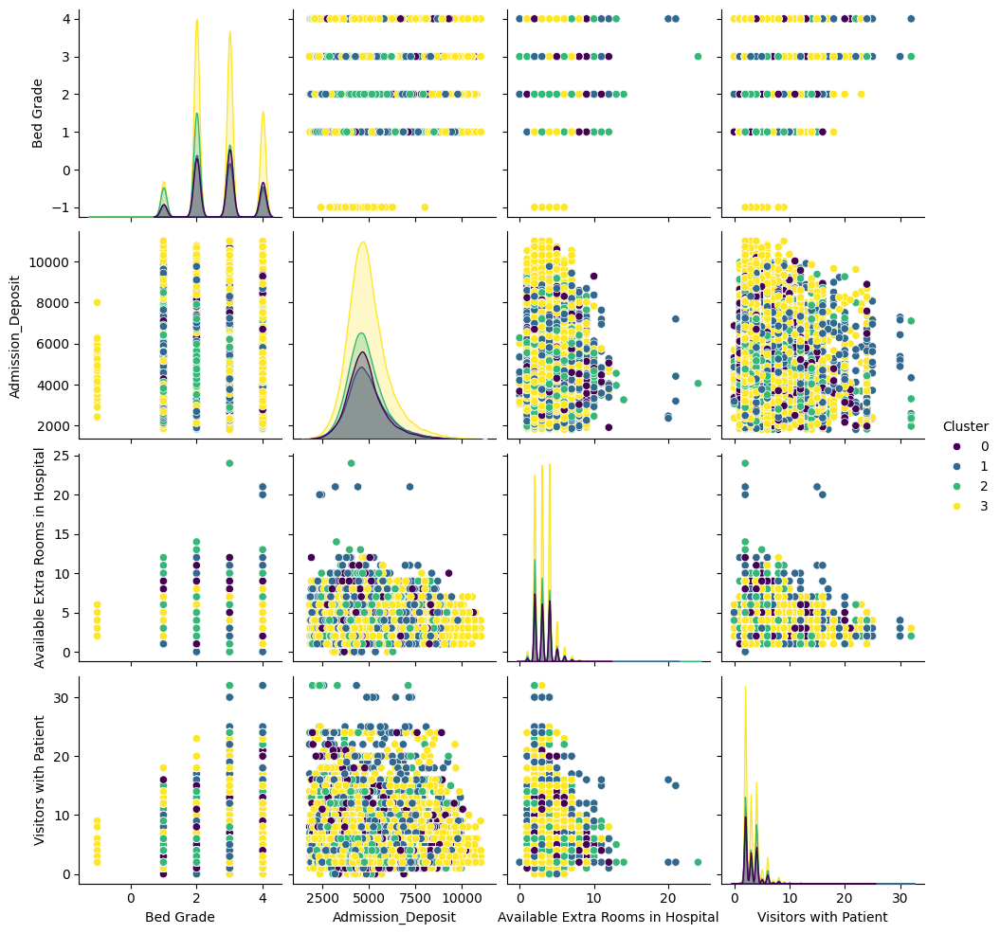| Cluster | Description | Characteristics |
|---|---|---|
| 0 (Balanced) | Efficient resource utilization | Moderate bed grades, admission deposits, and extra rooms |
| 1 (High-End) | Premium hospitals | Highest admission deposits and extra rooms, most visitors |
| 2 (Budget) | Possible lower-income areas | Lowest bed grades, deposits, and extra rooms |
| 3 (Mixed) | High-quality with moderate capacity | Highest bed grades, second-highest deposits |
5. Key Predictive Factors
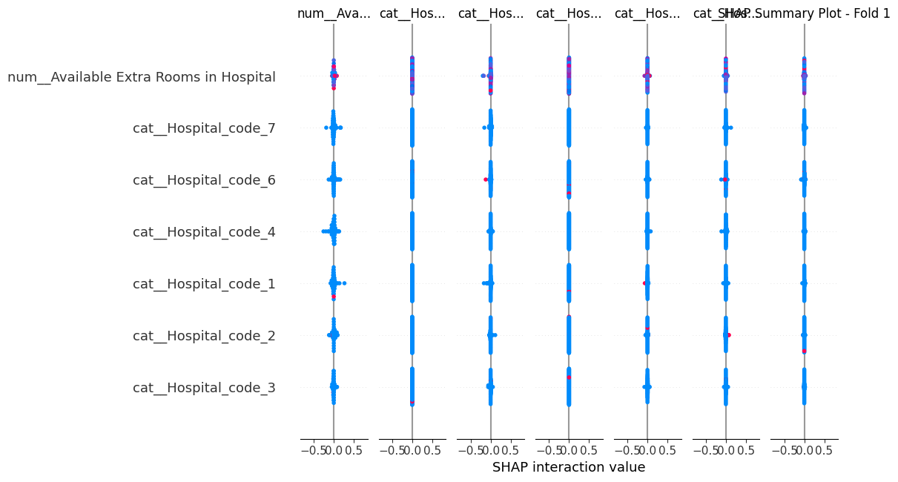

 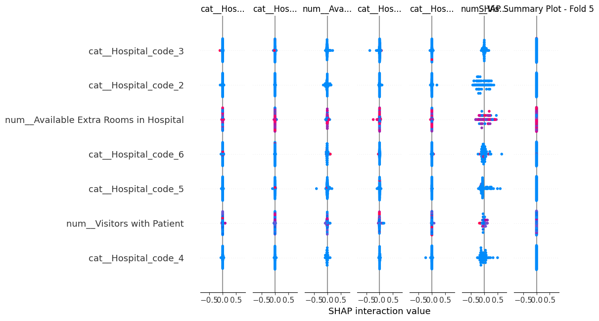
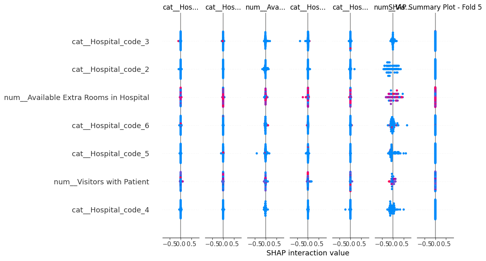
- Number of visitors with the patient
- Admission deposit amount
- Available extra rooms in the hospital
- Specific ward types (especially Q, P, S)
- Type of admission (Emergency, Trauma)
- Severity of illness
- Specific hospital and city codes
The consistency of these factors across different folds and modeling approaches (LSTM, Random Forest, XGBoost, etc) underscores their robustness as predictors of hospital length of stay.
Model Performance
| Model | Train Accuracy | Test Accuracy |
|---|---|---|
| Neural Network | 65.24% | 80.42% |
| CatBoost | 46.23% | 42.84% |
| XGBoost | 45.80% | 42.41% |
| Random Forest | 49.68% | 42.19% |
| Gradient Boosting | 41.93% | 41.62% |
| Logistic Regression | 39.92% | 40.10% |
| Baseline (Dummies) | 27.43% | 27.64% |

The neural network model achieved high AUC scores (0.92 to 1.00) across all classes, indicating excellent predictive performance.
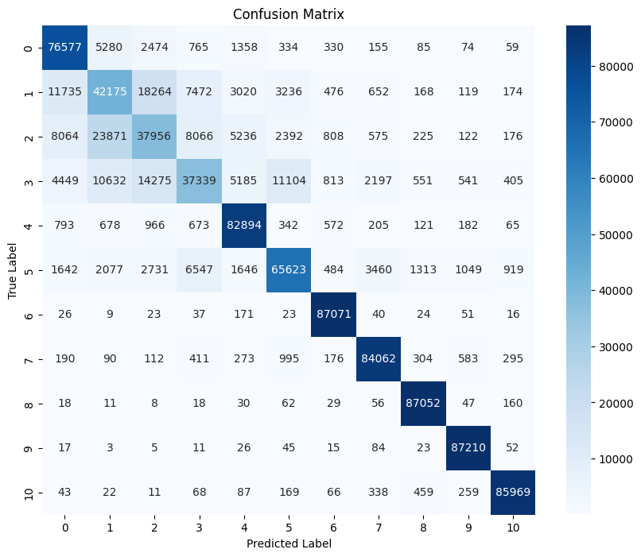The confusion matrix shows good prediction accuracy for most classes, with some challenges in distinguishing between certain adjacent classes.
Business Impact
Implementing our best model could lead to significant cost savings:
| Model | FP Cost | FN Cost | Total Cost | Savings |
|---|---|---|---|---|
| Baseline | $4,689,900 | $36,698,500 | $41,388,400 | - |
| Deep Learning | $1,000,000 | $10,000,000 | $11,000,000 | $30,388,400 |
| CatBoost | $1,500,000 | $17,500,000 | $19,000,000 | $22,388,400 |
| XGBoost | $1,300,000 | $18,500,000 | $19,800,000 | $21,588,400 |
Business Recommendations
- Resource Optimization and Facility Improvement:
- Focus on high-demand wards (R, Q) while evaluating underutilized wards (P, T, U).
- Invest in upgrading bed grades and ensuring adequate extra rooms to improve care quality and management efficiency.
- Personalized Patient Care:
- Tailor care plans based on admission type and illness severity, particularly for medium-stay patients (10-40 days).
- Develop specialized programs for working-age adults in ward facility F.
- Visitor and Follow-Up Management:
- Implement structured visitor programs that balance patient support with operational efficiency.
- Provide targeted post-discharge support for high-risk patients to reduce readmission rates.
- Data-Driven Strategies and Continuous Improvement:
- Regularly retrain and fine-tune predictive models with new data to improve predictions.
- Implement best practices from high-performing hospitals, especially in regions X and Y, and prioritize resources in gynecology and anesthesia.
Technical Recommendations
To further improve our model performance and gain deeper insights, we propose the following technical steps:
-
Enhanced Traditional Modeling:
- Implement SMOTE (Synthetic Minority Over-sampling Technique) to address class imbalance.
- Apply Stratified K-Fold cross-validation to maintain class distribution across folds.
- Re-run traditional models (Random Forest, Gradient Boosting, XGBoost, CatBoost) with these techniques.
- Analyze changes in model performance and feature importance.
-
Ensemble Method Exploration:
- Develop a voting classifier combining the best-performing traditional models.
- Compare the ensemble model's performance against our current LSTM Neural Network.
- Evaluate potential improvements in prediction accuracy and robustness.
-
Comparative Analysis:
- Conduct a thorough comparison of all models, including the new ensemble approach.
- Assess trade-offs between model complexity, interpretability, and performance.
- Determine the most suitable model or combination of models for deployment.
- Consider the preference for ensemble methods over neural networks if performance is comparable, due to their superior interpretability.
By implementing these technical recommendations, we aim to potentially enhance our predictive capabilities and gain a more comprehensive understanding of the factors influencing hospital length of stay.